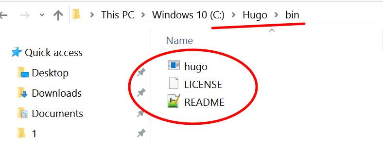
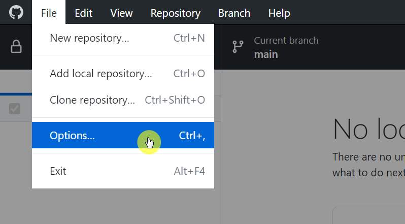
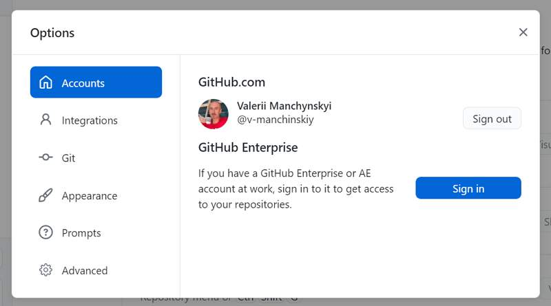
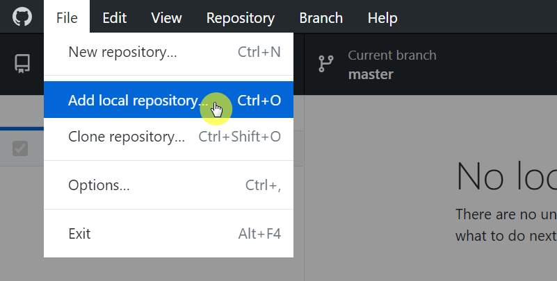
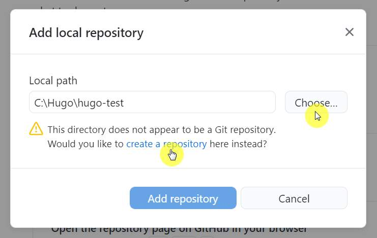
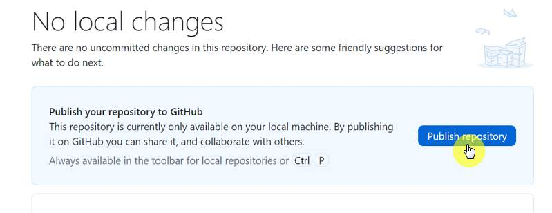

How To Create New Hugo Site
Hugo Tutorial✔️ Preparing to create a new site
Instal Hugo Extended last version as stated here: Hugo Docs.
Below I describe my version of this process for Windows 10 users.
- Go to the Hugo releases page: GitHub.
- Find and download the latest release of Hugo Extended for your operating system, the 32-bit or 64-bit file depending on whether you have 32-bit or 64-bit Windows.
- Move the dowloaded ZIP file into your Hugo bin folder:
C:\Hugo\binand extract it into the current folder. Now you’re supposed to have three new files here:hugo(executable),LICENSE,README.  - Add Hugo to your Windows PATH settings:
- Right click on the Start button.
- Click on System.
- Click on Advanced System Settings on the left.
- Click on the Environment Variables… button on the bottom.
- In the User variables section, find the row that starts with PATH (PATH will be all caps).
- Double-click on PATH.
- Click the New… button.
- Type in the folder where
hugo.exewas extracted, which isC:\Hugo\binif you went by the instructions above. The PATH entry should be the folder where Hugo lives and not the binary. Press Enter when you’re done typing. - Click OK at every window to exit.
👍 So, all the preliminary preparations are done.
💡 Now you will create a new Hugo site
Run
VS Code app. In Terminal tab write: hugo new site hugo-test . Words “hugo-test” you can replace with your own site name.

Further click “Enter”.
✨🎓 Get your congratulations 😊👍:

Your new Hugo site was created in a moment!
➕ Create new GitHub repository for existing Hugo site local folder
- Run GitHub Desktop app, click “File”->“Option” and connect to you GitHub account.  
- On the top left corner, click “File”->“Add local repository” 
- In modal dialog set “Local path” to your new Hugo site folder by clicking “Choose…” button. Then click to link “create a repository” (don’t click “Add repository” button). 
- Publish new repository to GitHub by clicking on “Publish repository” button and confirmation in the next dialog. 